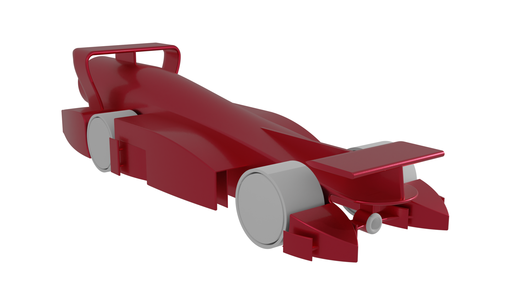
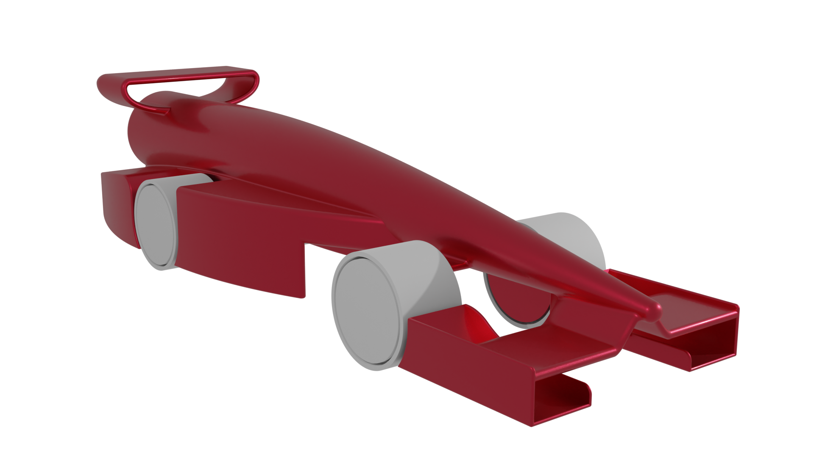
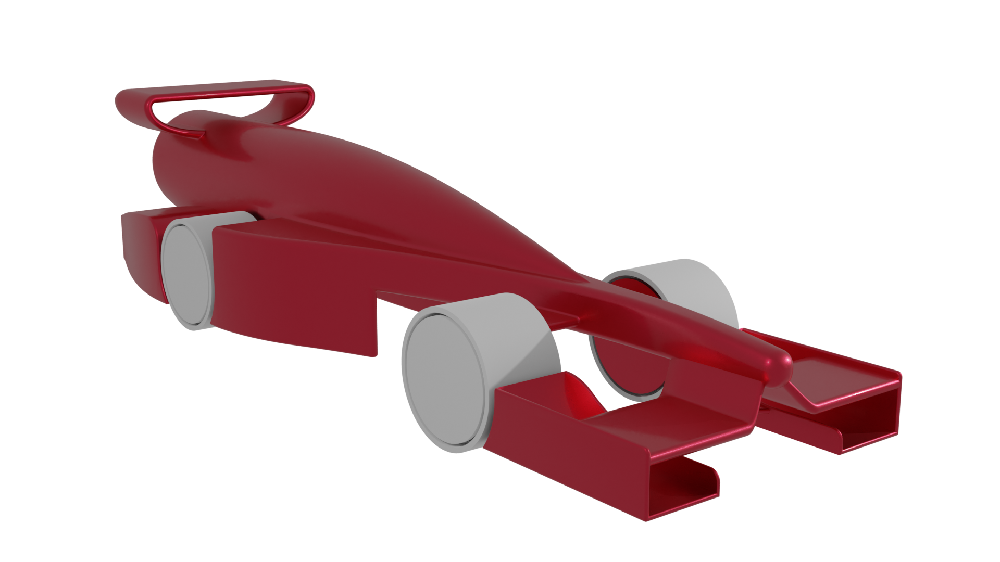
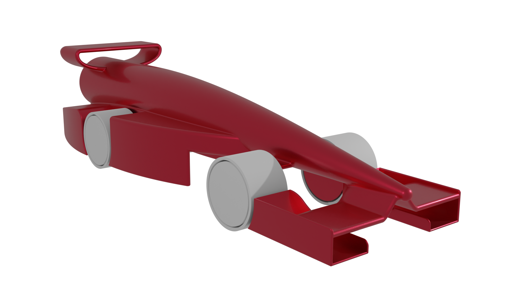
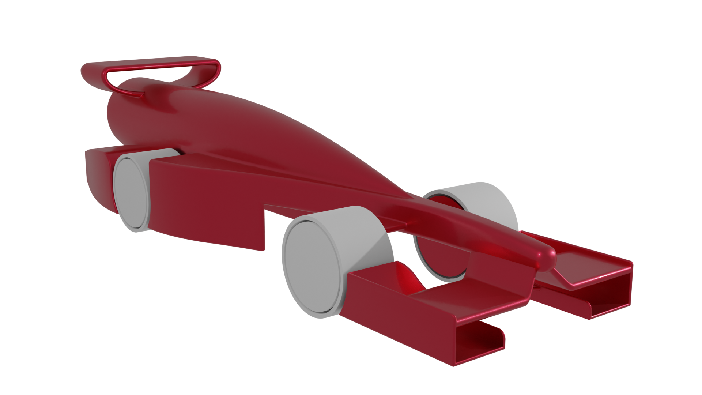

< Zurück zur Startseite
Sponsorennewsletter August 2021
21. März 2022, Isabelle Burzlaff
Sehr geehrte Sponsoren!
Nun liegt schon etwas Zeit zurück, seitdem wir uns das letzte Mal bei Ihnen
gemeldet haben und in dieser Zeit ist viel passiert!
In allen Arbeitsbereichen wurde viel gearbeitet und wir können zufrieden
behaupten: Wir liegen gut im Zeitplan und sind stetig vorangekommen.
Das Testrennen
Bereits im April und Mai haben Patrick und Jarno unsere ersten beiden
Prototypen entwickelt und konstruiert, die wir in der letzten Woche vor den
Sommerferien, der „Projektwoche“, im Rahmen eines Testrennens auf der
schuleigenen Rennbahn miteinander vergleichen konnten.
Weiterer Bestandteil des Testrennens war es, herauszufinden, welche der vier
zur Auswahl stehenden Räder am besten für unsere Ziele geeignet sind.
Schlussendlich war das Ergebnis des Testrennens, dass der zweite Prototyp
den ersten Prototyp in der Zeit knapp unterboten hat.
Außerdem haben sich die gedrehten Aluminiumräder gegenüber den restlichen
Rädern durchgesetzt, da der Rundlauf der beste der vier Räder bei geringem
Gewicht ist.
Mit der Erkenntnis, dass vermehrte vertikale Elemente eine große Auswirkung
auf die seitliche Stabilität darstellen, haben sich Patrick und Jarno im Juni und
Juli an die Arbeit gemacht und einen dritten und vierten Prototypen sowie
sechs weitere Versionen des ersten und zweiten Prototypen zum Testen in der
Windkanalsoftware entworfen.
Die Prototypen

Der erste Prototyp enthält im Gegensatz zum zweiten Prototypen viele
Aerodynamik- und Luftglättungselemente sowie einen Unterboden mit vielen
Luftkanälen.
 Beim zweiten Prototypen haben sich die Jungs für einen simpleren Aufbau mit
einem langen Frontflügel entschieden, bei dem sich die Aerodynamik- und
Luftglättungselemente auf der vorderen Radkappe befinden.
Der dritte Prototyp stützt sich erstmals auf ein anderes Konzept, da er anstatt
eines halbkreisförmigen Zulaufes einen kegelförmigen Zulauf besitzt und
grundsätzlich eine andere Gestaltung der Frontpartie aufweist.

Auch der vierte Prototyp hat einen kegelförmigen Zulauf, der allerdings nicht
das Kernelement bildet, an dem alles an
dere befestigt ist, sondern aufgesetzt ist.

Beim zweiten Prototypen haben sich die Jungs für einen simpleren Aufbau mit
einem langen Frontflügel entschieden, bei dem sich die Aerodynamik- und
Luftglättungselemente auf der vorderen Radkappe befinden.
Der dritte Prototyp stützt sich erstmals auf ein anderes Konzept, da er anstatt
eines halbkreisförmigen Zulaufes einen kegelförmigen Zulauf besitzt und
grundsätzlich eine andere Gestaltung der Frontpartie aufweist.

Auch der vierte Prototyp hat einen kegelförmigen Zulauf, der allerdings nicht
das Kernelement bildet, an dem alles an
dere befestigt ist, sondern aufgesetzt ist.

Das erste Rad ist SLS-gedruckt aus PA12 und zeichnet sich durch sein äußerst
geringes Gewicht aus, dabei ist jedoch der Rundlauf nicht optimal.
Das zweite Rad, auch SLS-gedruckt aus PA12, hat wie das erste Rad ein
äußerst geringes Gewicht bei jedoch besserem Rundlauf.
Das dritte Rad ist aus POM (einem Plastik) gedreht. Dadurch hat es einen sehr
guten Rundlauf. Allerdings ist es aufgrund der großen Laufflächendicke sehr
schwer, da das Rad ansonsten unrund wäre.
Das vierte Rad ist aus Aluminium gedreht und hat dadurch einen sehr guten
Rundlauf bei relativ geringem Gewicht, welches der dünnen Laufflächendicke
zu verdanken ist.
Dieser Newsletter war etwas mehr auf die technischen Details unserer Arbeit
konzentriert, doch wir hoffen, dass wir Ihnen einen guten Einblick in die
Entwicklung unserer Rennwagen bieten konnten.
Gerne können Sie auch unseren Instagram-Account besuchen, den wir in den
letzten Wochen und Monaten weiterentwickelt haben.
Wir werden uns bald wieder mit einem weiteren Newsletter melden und
wünschen Ihnen bis dahin alles Gute!
Mit freundlichen Grüßen
Das Team Vicito